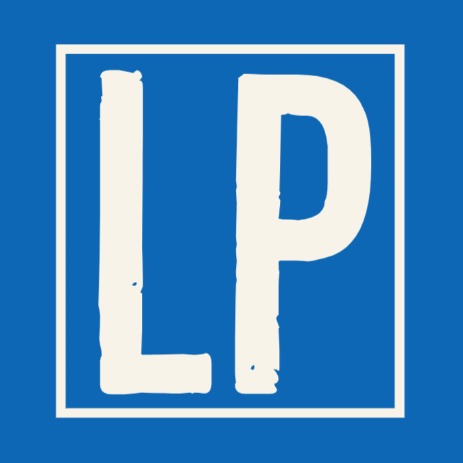
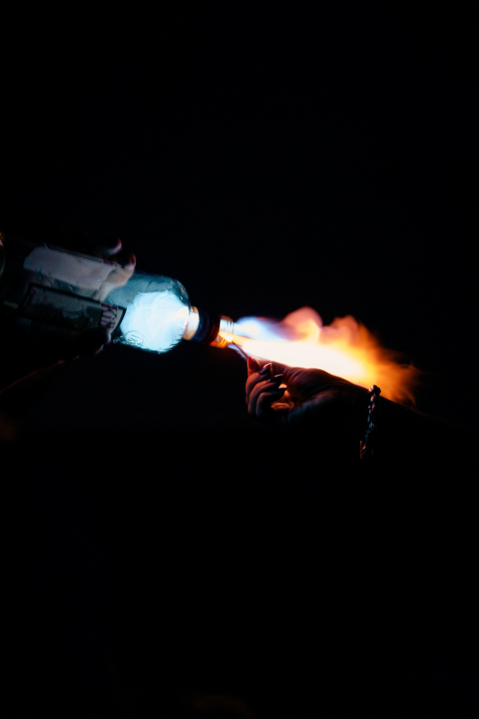
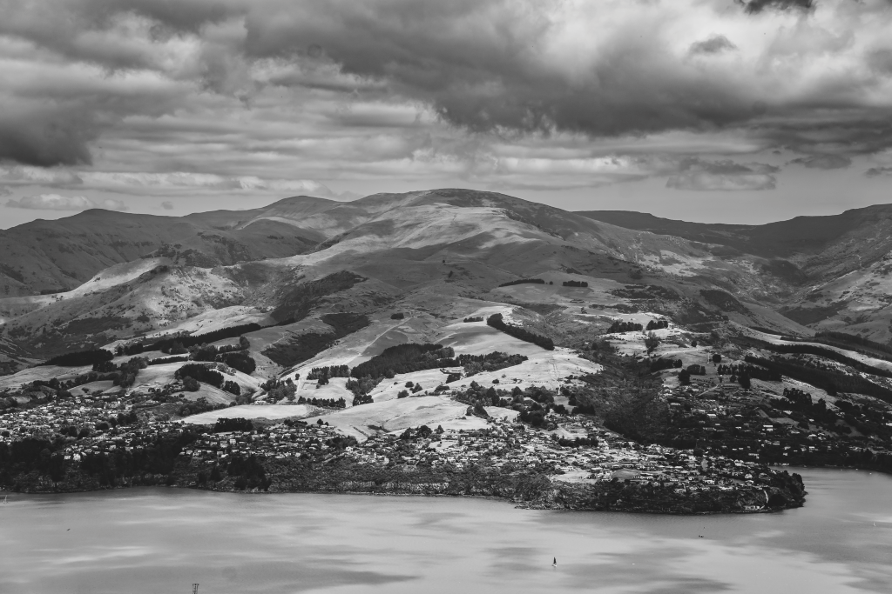

Home
Favourites
Astrophotography
Nature
Misc
About/contact
Domenik Photography
Favourites
Editors favourite images

Arthur's Pass
Combustion
Arthur's Pass seen in a clear day
a highly alcoholic drink that was set on fire
gap

Crescent Moon
Charteris Bay
The crescent moon seeing from New Zealand's sky
a black and white image of Charteris Bay